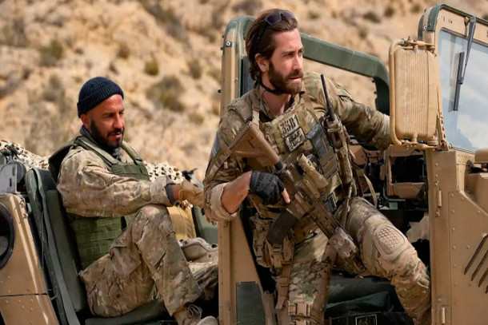
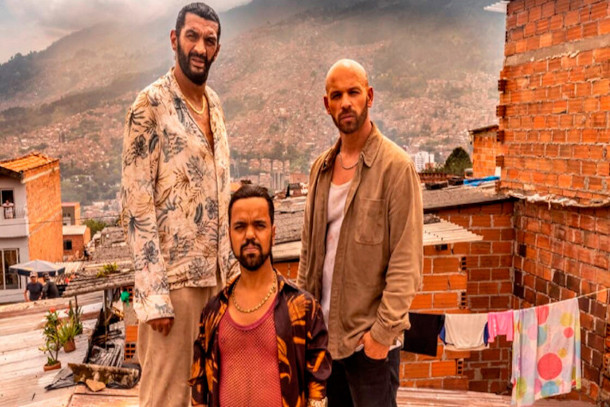
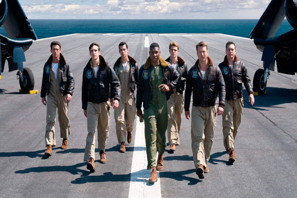
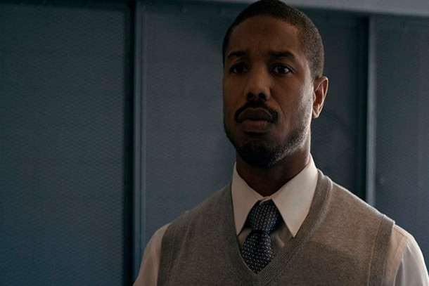
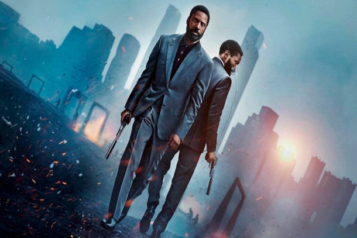
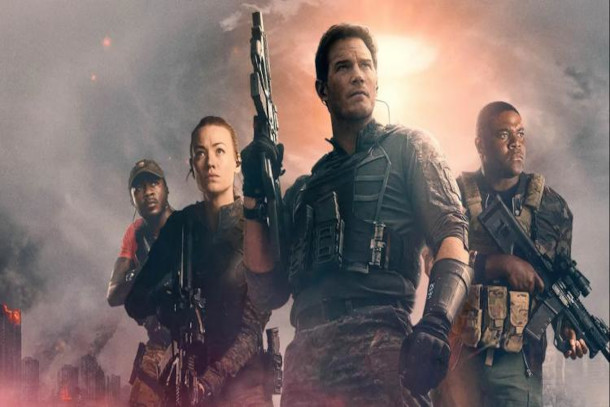
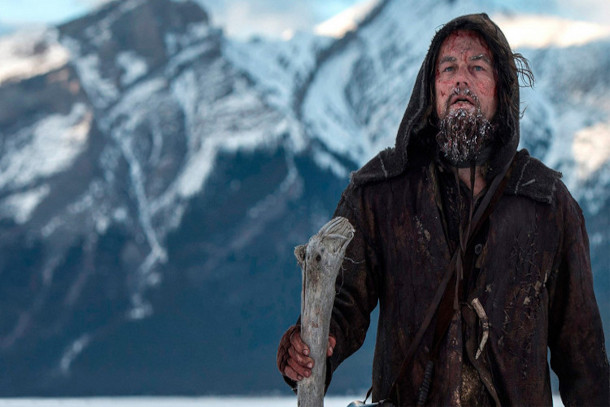

O Pacto
"O Pacto" conta a história do sargento John Kinley, um experiente combatente que, durante sua última missão no Afeganistão, é gravemente ferido e se encontra em uma situação desesperadora. Nesse momento crucial, surge Ahmed, um destemido intérprete local, que arrisca bravamente sua vida para salvar o sargento, carregando-o por quilômetros de terreno hostil em uma jornada repleta de perigos até um local seguro. O enredo do filme explora profundamente os desafios enfrentados pelos protagonistas, abordando não apenas os perigos do campo de batalha, mas também os laços de amizade, lealdade e sacrifício que se desenvolvem em situações extremas. "O Pacto" captura a essência da coragem e da camaradagem, apresentando uma história poderosa que mantém o público envolvido do início ao fim.
Creed III
Depois de conquistar a glória nos ringues, Adonis Creed tem desfrutado de uma carreira bem-sucedida e uma vida familiar plena. No entanto, quando seu amigo de infância e ex-prodígio do boxe, Damian, retorna após cumprir uma longa sentença na prisão, o campeão fica determinado a provar que Damian merece uma chance de redenção. O confronto entre esses antigos amigos transcende os limites de uma simples luta. Para resolver pendências do passado, Adonis se vê obrigado a arriscar seu futuro ao enfrentar Damian, um lutador que não tem nada a perder.
Esquema de Risco - Operação Fortune

O agente secreto Orson Fortune está encarregado de localizar e interromper a venda de uma perigosa nova tecnologia de armas nas mãos do bilionário Greg Simmonds. Para auxiliá-lo nessa missão crucial de salvar o mundo, Fortune monta uma equipe composta pelos melhores membros das operações especiais. Além disso, ele recruta o renomado astro de Hollywood, Danny Francesco, cuja fama e habilidades únicas ajudarão a equipe a passar despercebida durante a operação. Juntos, eles enfrentarão o desafio de conter essa ameaça global e proteger a segurança de todos.
Resgate em Medelín
Brahim, um jovem youtuber, é sequestrado pelos traficantes na Colômbia, desencadeando uma série de eventos dramáticos. Réda, seu irmão, convence seus amigos Stan e Chafik a se unirem a ele em uma ousada missão de resgate. No entanto, à medida que a situação se desenrola, as coisas saem do controle. Determinados a libertar Brahim das garras dos traficantes, eles contam com a ajuda indispensável de uma policial colombiana e de um ex-agente americano. Juntos, eles embarcam em uma perigosa jornada para rastrear o paradeiro de Brahim e resgatá-lo das mãos dos criminosos.
Irmãos de Honra
Este relato narra a história verídica de dois jovens aviadores da Marinha dos Estados Unidos que lutaram na Guerra da Coreia. Jesse Brown e Tom Hudner foram selecionados para integrar um destacado esquadrão de treinamento, onde se esforçaram ao máximo para se tornarem pilotos exemplares e forjaram uma amizade sólida. Contudo, essa amizade seria posta à prova em combate, quando os dois amigos enfrentaram desafios que colocaram suas habilidades e lealdade um ao outro à prova.
Luta Por Justiça
No filme Luta por Justiça, Bryan Stevenson (interpretado por Michael B. Jordan) é um advogado recém-formado em Harvard que decide abandonar uma carreira lucrativa em renomados escritórios da costa leste dos Estados Unidos para mudar-se para o Alabama e dedicar-se a representar prisioneiros condenados à morte que nunca receberam assistência jurídica adequada. Ao chegar lá, Bryan se depara com o caso de Walter McMillian (interpretado por Jamie Foxx), um homem negro injustamente acusado de assassinato, mas que nunca recebeu uma defesa adequada devido ao preconceito racial prevalente na região
Tenet
"Tenet" é um filme de ação e ficção científica dirigido por Christopher Nolan. A história segue um agente da CIA conhecido apenas como "O Protagonista" (interpretado por John David Washington), que é recrutado por uma organização secreta para impedir uma ameaça global que envolve manipulação temporal. Ele descobre que a tecnologia de viagem no tempo é real e está sendo usada por uma organização criminosa chamada "Sator" (interpretado por Kenneth Branagh), que busca destruir o mundo através de um algoritmo que permite que o tempo seja invertido. Com a ajuda de Neil (interpretado por Robert Pattinson), um agente secreto experiente, o Protagonista embarca em uma missão perigosa que o leva a diferentes partes do mundo, incluindo cidades como Mumbai, Londres e Oslo. No entanto, a manipulação do tempo apresenta desafios incríveis e a cada passo que o Protagonista dá, ele se aproxima mais da batalha final com Sator e sua organização.
A Guerra do Amanhã
No filme "A Guerra do Amanhã", a humanidade está em perigo quando uma espécie alienígena invade a Terra, matando milhões de pessoas. A única esperança de sobrevivência é voltar no tempo e recrutar soldados do passado para lutar contra a ameaça. O professor de biologia, Dan Forester (Chris Pratt), é convocado para se juntar à missão e viaja com um grupo de soldados e cientistas para o ano de 2051, onde a guerra está sendo travada. Eles descobrem que os alienígenas são extremamente difíceis de derrotar, e a luta para salvar a humanidade é mais perigosa do que jamais imaginaram. Enquanto tentam descobrir uma maneira de derrotar os invasores, Dan encontra sua filha adulta (Yvonne Strahovski) no futuro e trabalha com ela para tentar encontrar uma solução. Juntos, eles enfrentam desafios emocionais e físicos enquanto lutam pela sobrevivência da humanidade. Com um elenco estelar que inclui além de Chris Pratt e Yvonne Strahovski, J.K. Simmons e Betty Gilpin.
A Garota da Moto
"A Garota da Moto" é um filme brasileiro de ação e drama lançado em 2016, dirigido por João Daniel Tikhomiroff e baseado na série de TV homônima da emissora SBT. A história gira em torno de Joana (interpretada por Christiana Ubach), uma motogirl que trabalha como entregadora em São Paulo. Ela é uma mulher forte e destemida, que luta contra preconceitos e desafios diários em uma profissão dominada por homens. Quando seu ex-namorado e ex-chefe, Raul (interpretado por Sacha Bali), tenta sabotá-la profissionalmente e colocá-la em perigo, Joana se vê em uma luta pela sobrevivência. Ela precisa enfrentar gangues de motoqueiros rivais, policiais corruptos e até mesmo um atirador de elite, enquanto luta para provar sua inocência e proteger aqueles que ama.
O Regresso
Na década de 1820, em uma expedição de caça nas terras selvagens dos Estados Unidos, o lendário explorador Hugh Glass (Leonardo DiCaprio) é brutalmente atacado por um urso e deixado à beira da morte por seus companheiros de expedição, liderados pelo inescrupuloso John Fitzgerald (Tom Hardy). Determinado a sobreviver e buscar vingança contra aqueles que o abandonaram, Glass inicia uma jornada solitária através das montanhas congeladas e dos territórios hostis do Velho Oeste, enfrentando obstáculos como ferimentos graves, animais selvagens e tribos indígenas. Enquanto isso, Fitzgerald e os outros membros da expedição tentam encobrir sua ação criminosa e chegam a extremos para se livrar de qualquer ameaça que possa comprometer sua liberdade e lucro. Baseado em fatos reais e dirigido por Alejandro González Iñárritu, "O Regresso"